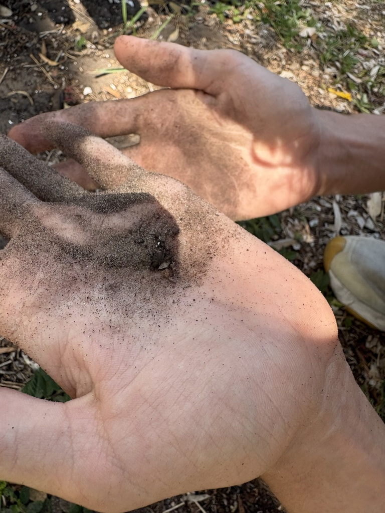

- Florida has the richest antlion fauna in the eastern United States — 22 species in nine genera, more than any other state in the region. Four of those species are found nowhere outside the Florida Keys.
- The larva digs its funnel-shaped pit by crawling backward in a spiral, using its abdomen as a plow. The finished trap sits precisely at the angle of repose — the steepest slope loose sand can hold before collapsing — and if a victim tries to scramble out, the larva hurls sand upward with a sharp snap of the head to trigger miniature landslides and knock prey back down.
- Antlions and owlflies both belong to the family Myrmeleontidae, but they look and behave quite differently as adults. Antlions are weak, mostly nocturnal fliers that resemble damselflies; owlflies are strong, fast-flying aerial hunters with dramatically long clubbed antennae and huge eyes, active at dusk and dawn.
- An antlion inverts the typical insect calendar: the larval stage lasts up to three years of subterranean predation, while the entire adult life — wings, flight, and all — lasts only a few weeks, just long enough to find a mate and lay eggs.
- This page exists because a Bright Futures student taught us the animal. He spotted the inverted cones in the sand, explained what had dug them, and fished a larva out to show us — the photograph here is that animal.
Plump, soft-bodied, about half an inch long when fully grown, with a broad flattened head and a tapering abdomen. The most striking feature is the pair of long, curved, spike-toothed jaws — nearly a third the length of the head. The body is mottled gray-brown and covered in short bristles that help it grip sand as it moves backward. Larvae are almost never seen at the surface; look for their conical pits instead.
Resembles a damselfly but is drabber — mostly brown or gray, with four long, narrow wings held tent-like over the abdomen at rest. Wings are laced with a fine network of veins and may be lightly mottled with dark markings. The antennae are short relative to body length and end in a small rounded club — the most reliable way to separate them from true damselflies at a glance. Body length roughly 1 to 1.5 inches.
Larger and more striking than an antlion adult, with a body up to roughly 1.5 to 3 inches and a wingspan that can reach 4 inches. The eyes are enormous and bulging, often appearing divided into upper and lower visual fields. The antennae are long — nearly as long as the body — and end in a pronounced club, which immediately separates owlflies from dragonflies. At rest, adults perch on stems or twigs with the abdomen angled upward away from the body.
Adult antlions are most often confused with damselflies; the clubbed antennae and nocturnal habits separate them. Owlflies are most often mistaken for dragonflies, but no Florida dragonfly has antennae remotely that long. Lacewings (family Chrysopidae) are much smaller and typically green.
Essentially silent to human ears — neither larvae nor adults produce sounds detectable by people under normal circumstances. Flying adult antlions are, however, far from acoustically unaware: a 2018 study published in the Journal of Experimental Biology confirmed that adults possess ultrasound hearing, responding to the echolocation frequencies used by hunting bats (best sensitivity between 60 and 80 kHz). Detected responses include abdominal twitches, wing flicks, and flight cessation — the same repertoire of evasive maneuvers documented in other eared nocturnal insects such as lacewings and mantids. The response kicks in only at close range, after a bat has already detected the antlion, rather than as an early-warning system.
For the larva, skip trying to find the animal and look for its handiwork instead: small conical pits in dry, loose sand, often clustered together under an overhang or at the base of a tree where rain cannot wash them away. For adult antlions, check lights at night — they are attracted to artificial light and can be found resting on nearby walls or vegetation. For owlflies, scan open areas at dusk for fast, dragonfly-like insects with strikingly long antennae, or look for adults resting on dry grass stems during the day with the abdomen tilted upward.
Larvae are sit-and-wait predators that capture ants, small beetles, spiders, and other ground-dwelling invertebrates that fall into their pits. They pierce prey with hollow jaws, inject venom to paralyze and liquefy internal tissues, then drink the contents. Adult antlions feed on nectar, pollen, and in some species small soft-bodied insects such as aphids and caterpillars; adult owlflies are active aerial hunters of moths, gnats, and other flying insects.
Check any patch of dry, fine sand sheltered from rain — under building eaves, beneath large-canopied trees, along sandy path margins, or at the base of structures. Look for clusters of small conical pits; each pit marks one larva below. At night, check exterior lights and the walls or vegetation immediately around them for resting adult antlions. At dusk, scan open areas for owlflies — fast, dragonfly-like insects with unusually long antennae.
Larval pits are visible year-round wherever suitable dry sand exists. Adult antlions and owlflies are most active and abundant in late spring through summer, with adults flying in the warmer months and most easily encountered at night near lights. Florida's warm climate means some larval activity continues through most of the year, though hot, wet summers can reduce activity when rain disrupts pits.
Observe larvae by crouching near a pit and watching — or gently dropping a small ant into one. Do not disturb the pits intentionally; a destroyed pit means the larva must spend energy relocating and rebuilding. Adults at lights can be watched at close range without disturbance.

- © Randall Carter (CC-BY-NC), via iNaturalist